Este documento detalha minhas principais contribuições e conquistas nos últimos 6 meses, bem como um panorama geral da minha trajetória profissional nos últimos 3 anos na empresa. O objetivo é apresentar de forma clara e objetiva o impacto do meu trabalho e a evolução das minhas competências, que me qualificam para um cargo de maior responsabilidade.
Últimos 6 Meses: Contribuições e Impacto Recente
Refatoração de Front-end e Back-end do CaaS
Período: 15,5 dias de trabalho
Realizei a refatoração completa do front-end e back-end do sistema CaaS. Embora a solução ainda não esteja em produção devido a inconsistências nos ambientes de Salesforce (HML e PROD), o trabalho foi concluído e passou por testes em HML. A importância desta tarefa reside na captação de novos clientes para Darede, demonstrando a capacidade de modernização e adaptação de nossas plataformas.
Validações de Faturamento Mensal (Billing)
Periodicidade: Mensal
Assumi a responsabilidade pelas validações mensais de faturamento, uma tarefa que historicamente era centralizada no Aleixo devido à complexidade e à necessidade de consolidação de informações. Minha atuação garantiu a continuidade e a precisão desses processos críticos incluindo construção de documentos de repasse de conhecimento para o time.
Gestão Inovadora da Fila de Tickets
Marco Histórico: Primeira profissional na história da equipe a esvaziar completamente a fila de tickets de suporte.
Com base nas solicitações e nos padrões identificados, desenvolvi um documento abrangente de melhorias para o DSM focado em clientes internos. Esta iniciativa não apenas resolveu problemas imediatos, mas também pavimentou o caminho para otimizações futuras.
OBS: 2 Melhorias já foram desenvolvidas no primeiro semestre de 2025. Link de melhorias anotadas: Confluence
Equalização do DSM (Back-end e Front-end) e Inovações Técnicas
Período: 18 dias de trabalho
Embora a solicitação inicial fosse apenas a equalização do DSM, minhas contribuições foram muito além, resultando em melhorias significativas na arquitetura e nos processos de desenvolvimento:
Criação da Primeira Collection de Back-end: Desenvolvi a primeira (e até o momento, única) collection de back-end para as plataformas internas, estabelecendo um novo padrão de organização e reusabilidade de código.
Automação de Deploy com Versionamento da API: Atualizei o serverless.yml para automatizar a criação e atualização de APIs, garantindo que, em caso de falhas, uma nova API possa ser restabelecida em poucos minutos.
Atualização da Versão do Node da API: Realizei a atualização da versão do Node.js da API da versão 14 para a 18, modernizando nossa stack tecnológica.
Criação de Layers para Mitigação de Erros: Identifiquei e resolvi um problema recorrente de dependências excessivamente grandes que causavam quebras nos back-ends.
Ponto de Diminuição de Retrabalho
Redução de tempo de testes: De mais de 4 horas para 10 minutos
Com a criação da collection de back-end, conseguimos uma redução drástica no tempo de testes da API do DSM. Anteriormente, testávamos a plataforma inteira (24 páginas, diversas funcionalidades, requisições, modais e botões) sem visibilidade clara do que chamava a API. Agora, os testes são realizados na API completa através da Collection em apenas 10 minutos.
Ponto de Melhorias Internas
Melhoria no Consumo de Horas (Dosystems)
Status: Aprovado para produção | Tempo gasto: 2,3 dias
Atuei na melhoria do sistema de consumo de horas, que é oficialmente o ticket mais solicitado na fila da Dosystems. Esta funcionalidade permitirá que clientes internos atualizem o consumo de horas (criação/deleção de apontamentos) nos contratos de forma mais eficiente, com as alterações refletidas imediatamente no portal e no DSM.
Ponto de Assertividade em Estimativas
Projeto Correios: Simplicidade e Entrega Rápida
Período: 4,3 dias de trabalho (concluído antes do prazo)
Realizei a estimativa e o desenvolvimento do projeto Correios, finalizando a tarefa no dia seguinte à sua atribuição, bem antes do prazo estipulado. Apesar de algumas adversidades no desenvolvimento do back-end da plataforma, minha agilidade e foco na entrega garantiram o sucesso do projeto.
Tela de Gerenciamento de Permissões
Período: 1 dia de trabalho
Desenvolvi a tela de gerenciamento de permissões, uma funcionalidade essencial para a nova estrutura de permissionamento e segurança, em conformidade com as normas ISO27001/2. A conclusão em apenas um dia demonstra minha capacidade de entregar soluções complexas com rapidez e eficiência.
Treinamento de Novos Integrantes
Dediquei tempo e esforço ao treinamento de novos integrantes da equipe, incluindo Eduardo Silva, Julia Silveira e Ramos Janones. Compartilhei meu conhecimento e experiência para acelerar a curva de aprendizado deles, contribuindo diretamente para a produtividade e a integração do time.
Resumo dos 3 Anos de Trajetória: Uma Visão Abrangente
Esta seção oferece um panorama das minhas principais atuações e projetos ao longo dos meus 3 anos na empresa, demonstrando a amplitude das minhas habilidades e a diversidade dos desafios que enfrentei e superei.
Projeto Jacto: Inovação em Geoprocessamento e IoT
Contexto: Equipe de 3 JRs, incluindo eu
Participei ativamente das calls para fechar a Prova de Conceito (POC) com a Jacto. O projeto exigiu o desenvolvimento de um script em C# (linguagem que eu nunca havia utilizado) para coletar dados via AWS IoT. A apresentação bem-sucedida deste script foi crucial para o cliente acreditar na capacidade da equipe em entregar a POC.
Escopo da POC:
Desenvolvimento do Zero de uma Aplicação de Geoprocessamento
Coleta e Processamento de Dados MQTT
Armazenamento e Entrega em Tempo Real (Kinesis Firehose, S3, DynamoDB com DAX)
Minha Atuação:
Back-end: Coleta, processamento e armazenamento de dados
Front-end: Renderização dos polígonos criados
Projeto Houpa: Pioneirismo em Prototipagem e Design
Marco: Minha primeira experiência com prototipagem e a primeira colaboradora a prototipar na Dosystems.
Obtive um grande desempenho no redesenho completo da UI/UX da empresa, introduzindo fundamentos de design como benchmarking (pesquisa de mercado) e um fluxo de desenvolvimento de projetos com atuação de designers.
Minha Atuação:
Back-end: Migração de banco de dados antigo para novo. Coleta, Filtro, Tratamento e Inserção
Front-end: Desenvolvimento de telas
UI UX: Implementação de fluxo funcional, e fundamentos de UIUX para valorizar produto do cliente
SP Data: Desenvolvimento Ágil com Nova Tecnologia
Neste projeto, utilizei um framework nunca antes trabalhado por mim: Vue.js. Concluí a prototipagem e o desenvolvimento de todas as telas do front-end antes do prazo estipulado, demonstrando minha rápida adaptabilidade e eficiência na entrega de projetos com novas tecnologias sem utilização de ferramentas de IA.
Swift: Prototipagem de Chatbot
Período: Concluído em 2 dias
Realizei a prototipagem de um chatbot, abrangendo desde o wireframing de baixa fidelidade até a alta fidelidade (desktop e mobile). A agilidade na entrega deste projeto reforça minha capacidade de transformar ideias em protótipos funcionais em tempo recorde.
Aline Vieira: Treinamento em front-end e prototipagem, reduzindo em até 5x o tempo de criação de componentes em projetos como BMW, Friboi e Bem Hospitalar
Matheus Hugolini: Treinamento em front-end, boas práticas de código, como debugar, e estilizar mais rápidamente.
Julia Silveira e Eduardo Silva: Treinamento em atendimento a tickets, processos internos e boas práticas
Ramos: Treinamento em debug de aplicações cloud AWS e principais serviços (Lambda, API Gateway, S3, CodeBuild, CloudWatch, Pipelines, Secrets Manager)
Transcrição do vídeo sobre Feedbacks recebido por Breno Pierin e Guilherme Carvalho:
Breno Pierin - "Eu quis dizer que a prioridade e a atuação em chamados... então a Nick pegou essa sprint, conseguiu focar nos chamados, diminuiu a incidência de paradas dentro da sprint, o que ajuda bastante no desenvolvimento dos itens que a gente teve... A atuação da Nick nos tickets tem sido muito efetiva na solução dos problemas e também na documentação das atividades"
×
Evidência: Primeira GMUD bem sucedida
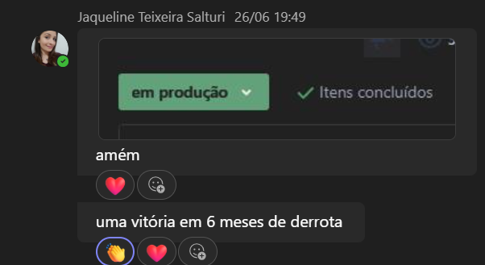
Depois da normalização dos ambientes do DSM, os deploys são realizados sem dor de cabeça.
×
Evidência: Primeira GMUD Bem-sucedida
Insira aqui o print da primeira GMUD realizada com sucesso
Print da primeira GMUD realizada com sucesso após a normalização dos ambientes.
×
Evidência: Gif de conversa - Complexidade
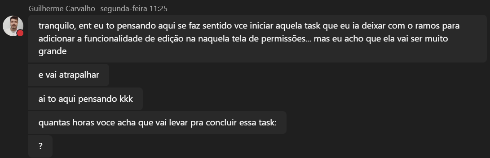
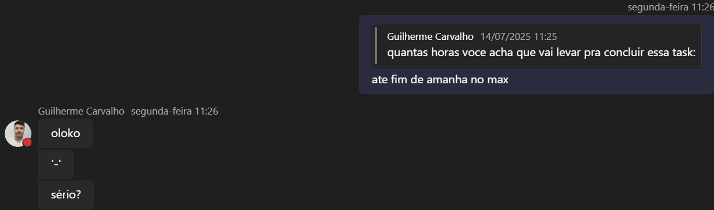
Hesitação em passagem de task por conta de complexidade e estimativa da tela de gerenciamento de permissões.
×
Link: Prototipagem do Chatbot Swift
Link ou screenshot da prototipagem do chatbot Swift desenvolvida em 2 dias.
2. Documentação de como utilizar dentro do Confluence.
3. Amostra da estrutura da Collection com:
Módulos
Descrições e nome das funções
Requisições já montadas para auxílio
Variáveis de ambiente já setadas com valores dos ambientes das APIs de teste
×
Evidência: APIs e Serverless.yml
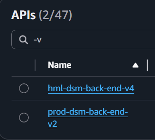
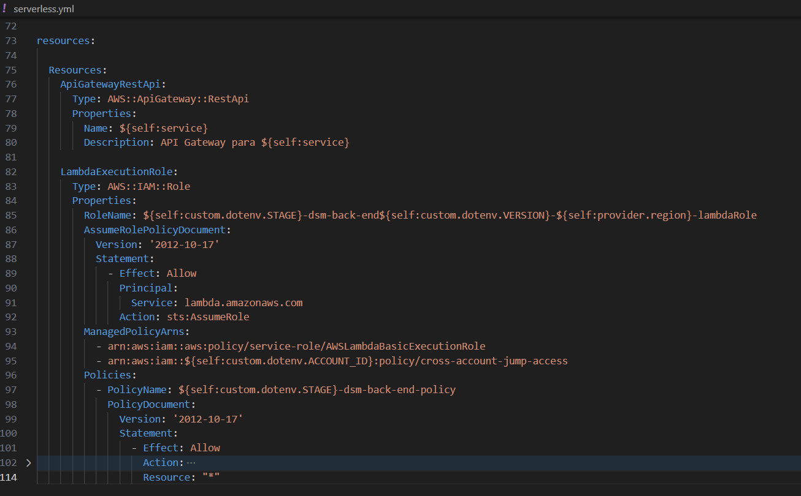
1. Novas APIs criadas, atuamente utilizadas como oficiais. OBS: Com nomes padronizados | Antes: prod-dev-dsm-back-end | Depois: prod-dsm-back-end-{VERSAO}
2. Novo arquivo serverless, com dinamismo de criar e atualizar APIs.
×
Evidência: Novas versões
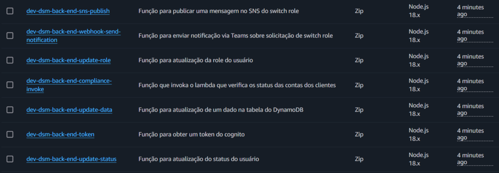
1. Novas funções criadas.
2. Proatividade em atualização de versão do Node
×
Evidência: Layers estabilizadas
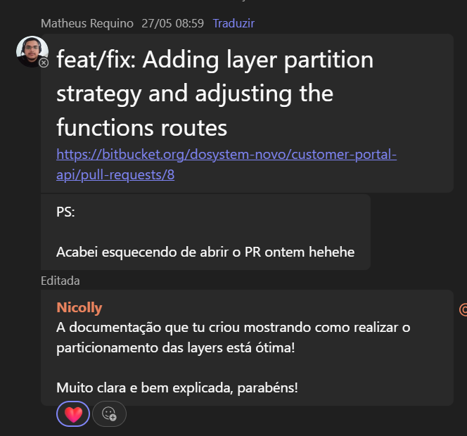
1. Reconhecimento de uma boa documentação
2. Proatividade em aplicar estrtura de Layers no back do Portal do Cliente.
2.1. Documentar e compartilhar conhecimento obtido essencial para escalonamento e funcionalidade de aplicações.
×
Evidência: Melhoria de Atuailzação de Horas desenvolvida
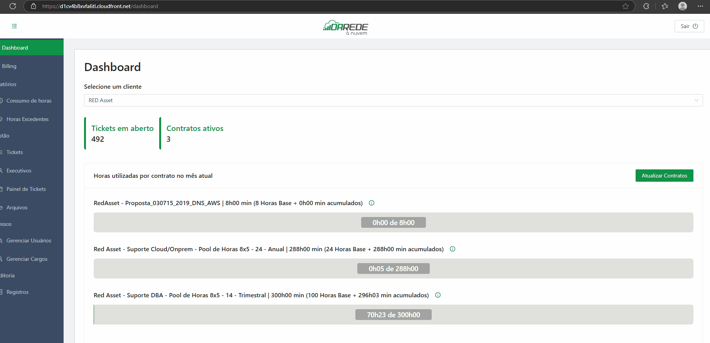
Funcionalidade com ótima trativa de experiência do usuário, ja que cada atualização pode levar cerca de 30 segundos.
×
Evidência: Checkpoint
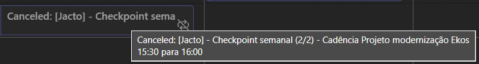
POC com retorno de 1 Milhão para empresa.
×
Back end: Migração de todo banco de dados
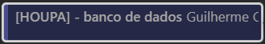
Checkpoints para validação de andamento de scripts criados.
×
Back end: Migração de todo banco de dados
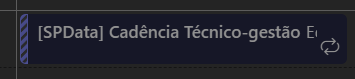
Checkpoints para validação de andamento de scripts criados | Links: Figma
×
Evidência: Reuniões com cliente e Criação de Propostas
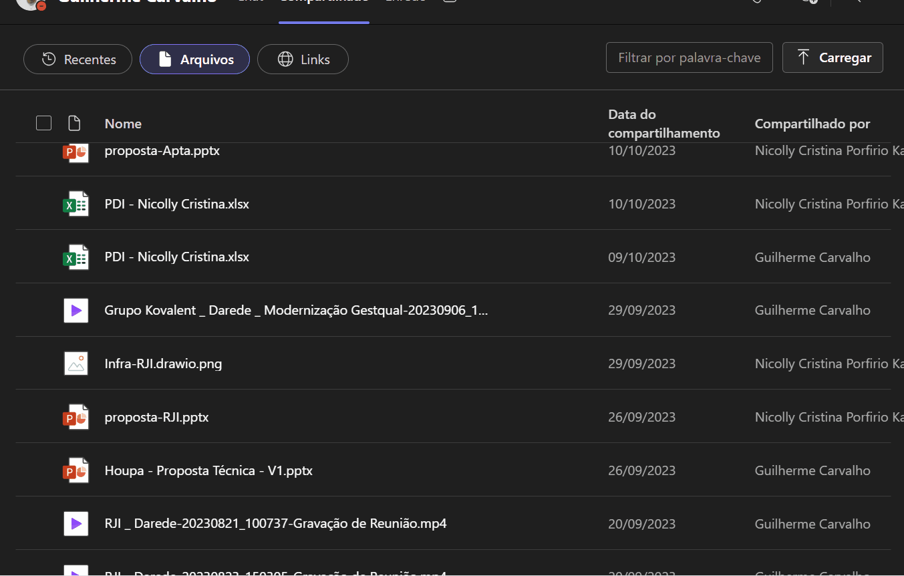
Calls com clientes e Propostas criadas. Na época para diminuição de retrabalho criei um script em Python para automatizar modelo de PPT, editar e redimensionar imagens etc, entregando propostas em tempo record.
×
Evidência: Reuniões com cliente e Apresentação de modelo de benchmarking para time
Novo fluxo de projeto adequava respeitosamente o time de design , reduzindo conflitos entre devs e designers, melhorou comunicação e entendimento do desejo do cliente, e acelerou desenvolvimento de solução protipadas 10x, no qual hoje é utilizado em todos os Projetos com Protótipos